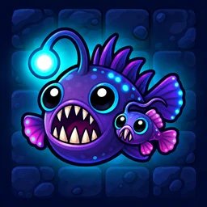
Deepdoku
Parejas del abismoPairs of the abyssLes paires des abyssesPares do abismo
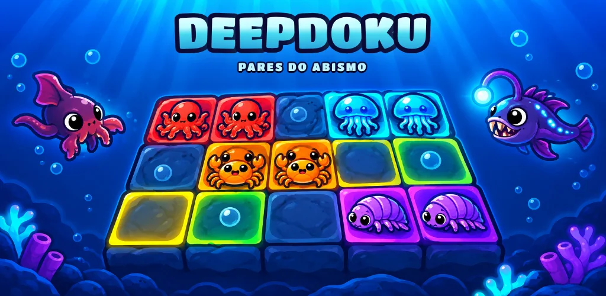
Baja al fondo del mar y encuentra las parejas de animales que se esconden en cada zona. Un puzzle de lógica nuevo, con reglas que se entienden en un minuto y niveles que dan mucho que pensar.
Tres reglas
- 1Cada zona de color esconde una pareja: dos animales pegados, lado con lado.
- 2Los números de los bordes dicen cuántos animales hay en cada fila y columna.
- 3Las parejas no se tocan entre sí, ni siquiera en diagonal.
Dive to the bottom of the sea and find the pairs of animals hiding in every zone. A new logic puzzle with rules you learn in a minute and levels that really make you think.
Three rules
- 1Each coloured zone hides one pair: two animals side by side.
- 2The numbers on the edges tell how many animals are in each row and column.
- 3Pairs never touch each other, not even diagonally.
Plonge au fond de la mer et trouve les paires d'animaux cachées dans chaque zone. Un nouveau puzzle de logique, avec des règles qu'on comprend en une minute et des niveaux qui font vraiment réfléchir.
Trois règles
- 1Chaque zone de couleur cache une paire : deux animaux collés, côte à côte.
- 2Les nombres sur les bords indiquent combien d'animaux il y a dans chaque ligne et colonne.
- 3Les paires ne se touchent pas, même en diagonale.
Mergulhe até o fundo do mar e encontre os pares de animais escondidos em cada zona. Um quebra-cabeça de lógica novo, com regras que você aprende em um minuto e níveis que fazem pensar de verdade.
Três regras
- 1Cada zona colorida esconde um par: dois animais grudados, lado a lado.
- 2Os números nas bordas dizem quantos animais há em cada linha e coluna.
- 3Os pares não se tocam, nem na diagonal.
De la superficie a la fosa
- 30 niveles en seis zonas de profundidad, de 4×4 a 8×8, todos con una única solución que se encuentra solo con lógica.
- 3 burbujas de oxígeno por nivel: cada animal mal colocado gasta una.
- Pistas que explican el porqué del siguiente paso.
- Ocho especies de las profundidades, cada una con un dato curioso real.
- En español, inglés, francés y portugués.
From the surface to the trench
- 30 levels across six depth zones, from 4×4 to 8×8, each with a single solution you can reach with logic alone.
- 3 oxygen bubbles per level: every misplaced animal uses one.
- Hints that explain why the next step works.
- Eight deep-sea species, each with a real fun fact.
- In English, Spanish, French and Portuguese.
De la surface à la fosse
- 30 niveaux dans six zones de profondeur, de 4×4 à 8×8, chacun avec une seule solution qu'on trouve uniquement par la logique.
- 3 bulles d'oxygène par niveau : chaque animal mal placé en coûte une.
- Des indices qui expliquent pourquoi l'étape suivante fonctionne.
- Huit espèces des abysses, chacune avec une vraie anecdote.
- En français, anglais, espagnol et portugais.
Da superfície até a fossa
- 30 níveis em seis zonas de profundidade, de 4×4 a 8×8, todos com uma única solução que se encontra só com lógica.
- 3 bolhas de oxigênio por nível: cada animal no lugar errado gasta uma.
- Dicas que explicam o porquê do próximo passo.
- Oito espécies do fundo do mar, cada uma com uma curiosidade real.
- Em português, inglês, espanhol e francês.
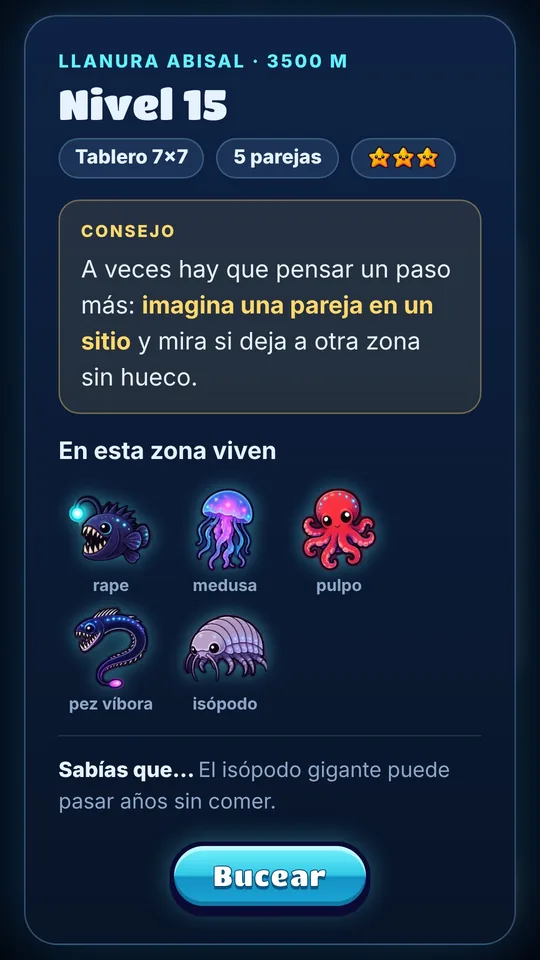
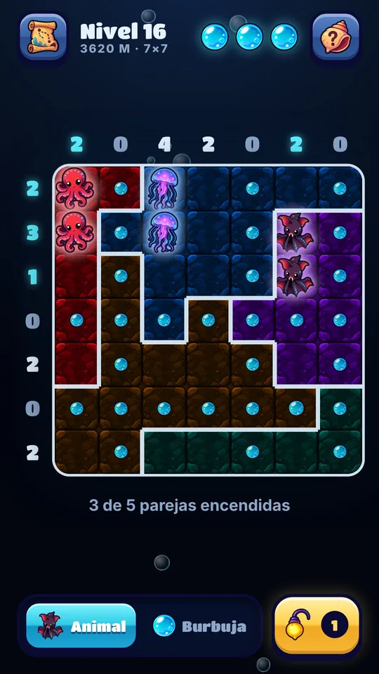
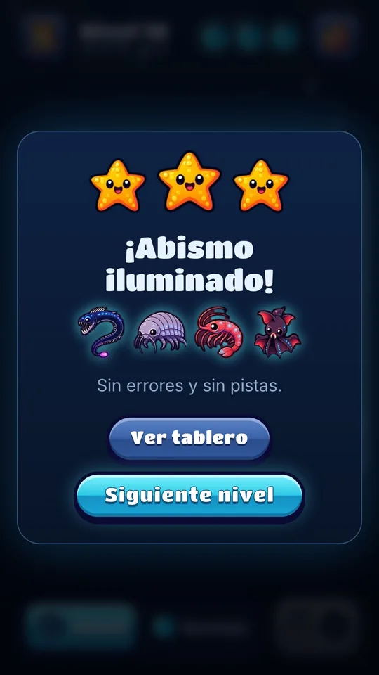
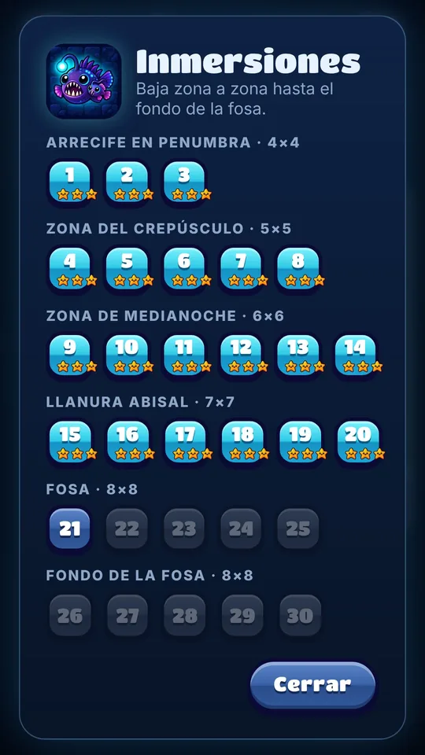
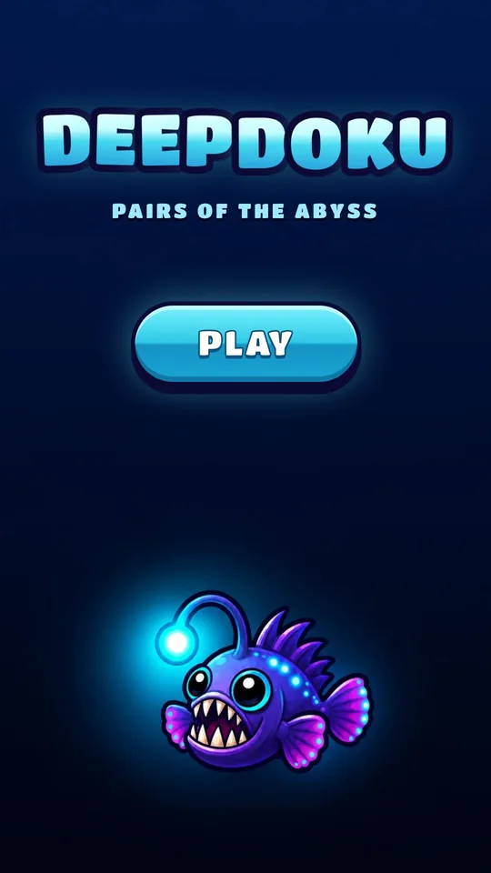
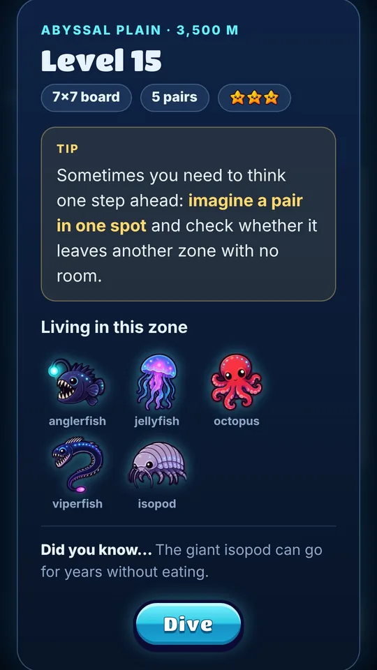
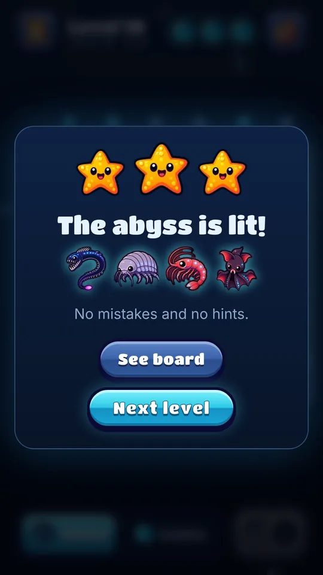
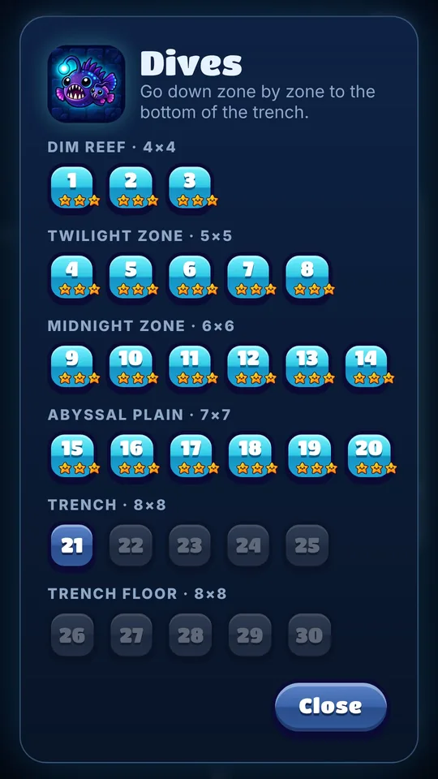
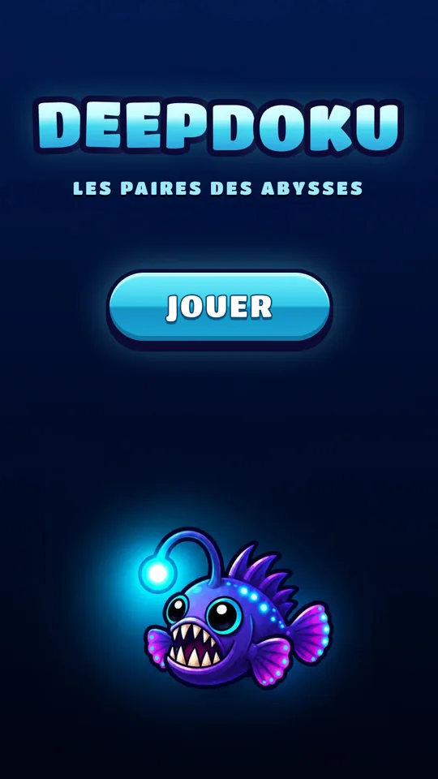
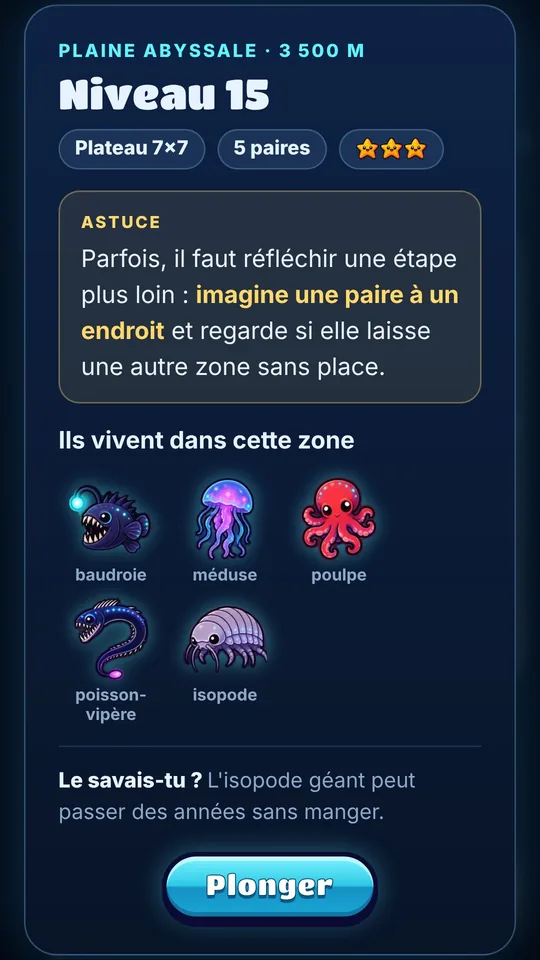
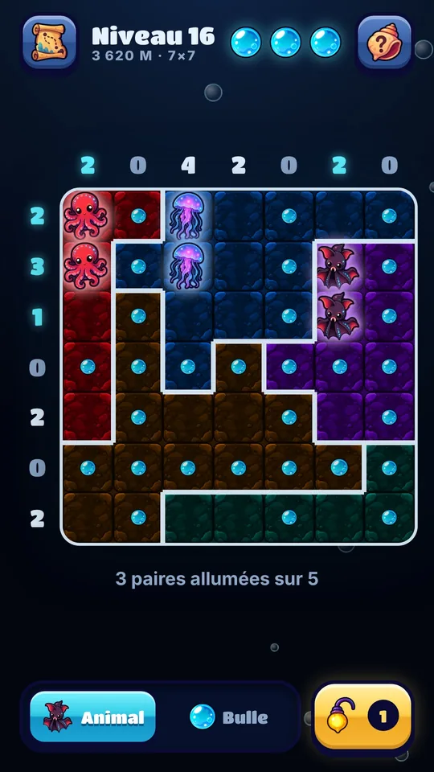
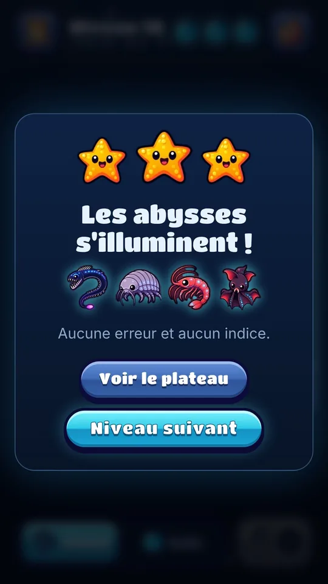
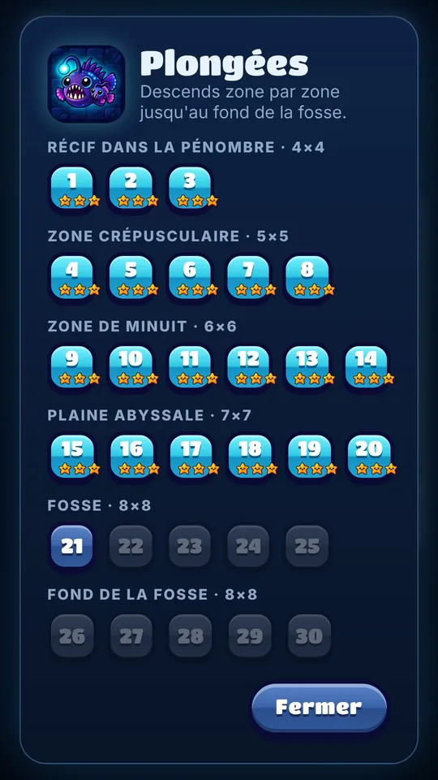
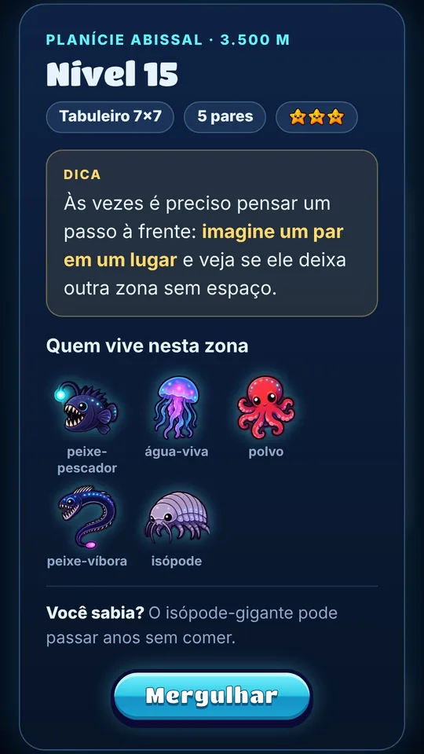
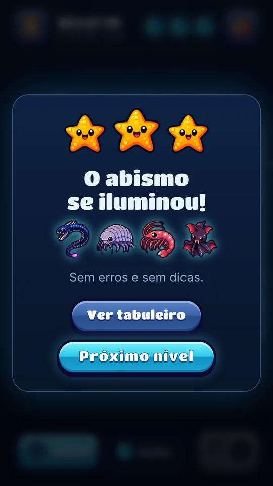
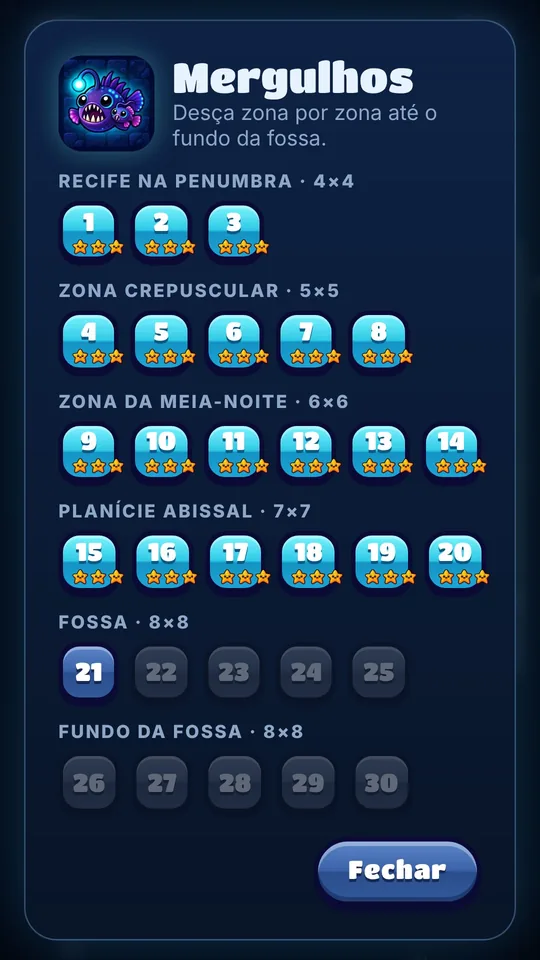